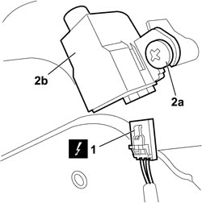

5580E18 ANTI-THEFT DEVICE W/L - R+R FOLLOWING ELECTRICAL WIRING CHECK
- Path
- Procedures > 55 ELECTRICAL EQUIPMENT > 5580 SPECIAL ACCESSORIES > 5580E ANTI-THEFT DEVICE > 5580E18 ANTI-THEFT DEVICE W/L - R+R FOLLOWING ELECTRICAL WIRING CHECK
- Kind
- repair procedure (removal / refitting; the operation number is the code)
- Applies to
- all engines; all production periods
- Interactive page
- https://sloeber94.github.io/elrnDB-fCrm/en/#/194000817
Applies to: all engines; all production periods
 Removing
Removing
 Refitting
Refitting- Open the left front side door.
- Turn the ignition key to the OFF position.
- Disconnect the negative battery terminal.
Description | Connector | |
|---|---|---|
BATTERY |
- Only for the left front door:
Op. 7005E12 CORNER COVER FOR ONE FRONT SIDE DOOR, LH OR RH - R.R.
Op. 7005E14 TOP COVER OF FRONT SIDE DOOR INNER PANEL - R R OR REPLACE
Op. 7005M14 SWITCH UNIT ON DRIVER'S FRONT DOOR - R.R.
Op. 7040E24 LOWER COURTESY LIGHT IN DOOR PANEL - R+R
Op. 7005E10 FRONT SIDE DOOR INTERIOR PANEL - R.R.
1. Disconnect the electrical connection for the anti-theft warning light.
Description | Connector | |
|---|---|---|
ALARM LED |
2. Undo the fixing bolts (2a) and remove the antitheft device warning light (2b).

Applies to: all engines; all production periods
Refitting
Removing- Check that the antitheft device warning light is not damaged.
- Place the antitheft device warning light in position and tighten the fixing bolts.
- Connect the electrical connection for the anti-theft warning light.
Description | Connector | |
|---|---|---|
ALARM LED |
Op. 7005E10 FRONT SIDE DOOR INTERIOR PANEL - R.R.
Op. 7040E24 LOWER COURTESY LIGHT IN DOOR PANEL - R+R
Op. 7005M14 SWITCH UNIT ON DRIVER'S FRONT DOOR - R.R.
Op. 7005E14 TOP COVER OF FRONT SIDE DOOR INNER PANEL - R R OR REPLACE
Op. 7005E12 CORNER COVER FOR ONE FRONT SIDE DOOR, LH OR RH - R.R.
- Connect the negative battery terminal.
Description | Connector | |
|---|---|---|
BATTERY |
Topics linked from this page (7)
- 7005E10 FRONT SIDE DOOR INTERIOR PANEL - R.R.
- 7005E12 CORNER COVER FOR ONE FRONT SIDE DOOR, LH OR RH - R.R.
- 7005E14 TOP COVER OF FRONT SIDE DOOR INNER PANEL - R R OR REPLACE
- 7005M14 SWITCH UNIT ON DRIVER'S FRONT DOOR - R.R.
- 7040E24 LOWER COURTESY LIGHT IN DOOR PANEL - R+R
- A001 BATTERY
- E040 ALARM LED